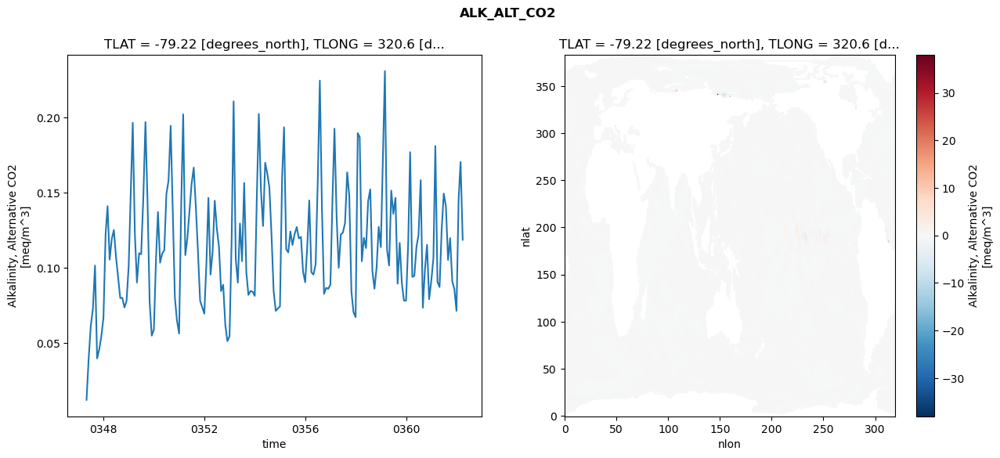
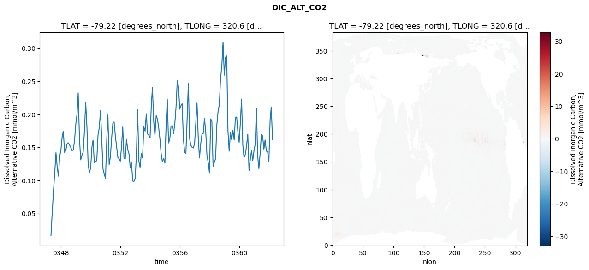
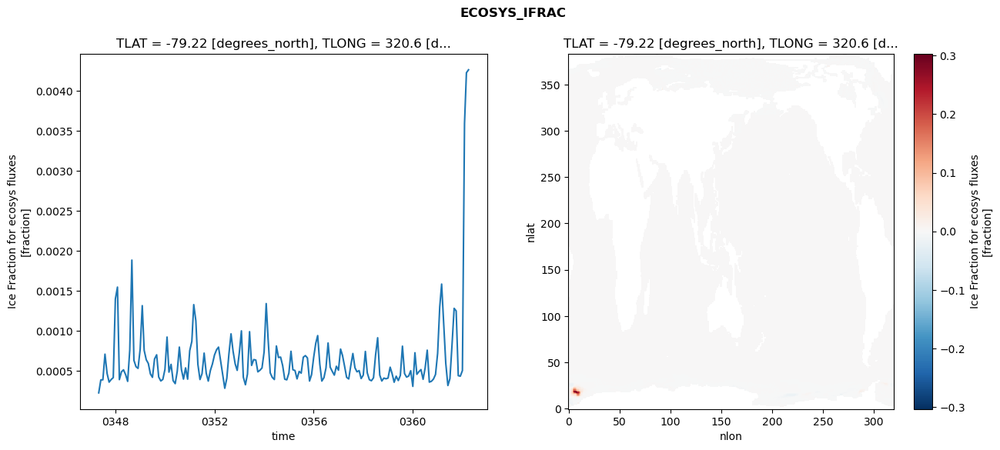
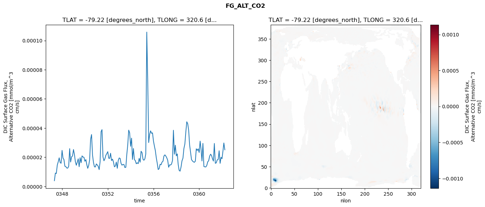

glb-dor_North_Atlantic_basin_008_1999-04-01_00033#
Simulation details#
Case: smyle.cdr-atlas-v0.glb-dor_North_Atlantic_basin_008_1999-04-01_00033.001
Basin: North_Atlantic_basin
Polygon: 8.0
Start date: 1999-04
Show code cell source Hide code cell source
import xarray as xr
import matplotlib.pyplot as plt
Show code cell source Hide code cell source
zarr_store = "/path/to/zarr/store"
# Parameters
zarr_store = "/global/cfs/projectdirs/m4746/Projects/Ocean-CDR-Atlas-v0/data/validation/smyle.cdr-atlas-v0.glb-dor_North_Atlantic_basin_008_1999-04-01_00033.001.validation.zarr"
Show code cell source Hide code cell source
%%time
ds_o = xr.open_zarr(zarr_store).compute()
ds_o
CPU times: user 738 ms, sys: 447 ms, total: 1.18 s
Wall time: 1.48 s
<xarray.Dataset> Size: 2MB
Dimensions: (nlat: 384, nlon: 320, time: 180)
Coordinates:
TLAT float64 8B -79.22
TLONG float64 8B 320.6
ULAT float64 8B -78.95
ULONG float64 8B 321.1
* time (time) object 1kB 0347-05-01 00:00:00 ... 0362-04-01 0...
z_t float32 4B 500.0
Dimensions without coordinates: nlat, nlon
Data variables:
ALK_ALT_CO2_diff (nlat, nlon) float32 492kB nan nan nan ... nan nan nan
ALK_ALT_CO2_rmse (time) float64 1kB 0.01191 0.03944 ... 0.1705 0.1186
DIC_ALT_CO2_diff (nlat, nlon) float32 492kB nan nan nan ... nan nan nan
DIC_ALT_CO2_rmse (time) float64 1kB 0.01645 0.05147 ... 0.2105 0.1622
ECOSYS_IFRAC_diff (nlat, nlon) float32 492kB nan nan nan ... nan nan nan
ECOSYS_IFRAC_rmse (time) float64 1kB 0.0002243 0.0003866 ... 0.004266
FG_ALT_CO2_diff (nlat, nlon) float32 492kB nan nan nan ... nan nan nan
FG_ALT_CO2_rmse (time) float64 1kB 3.909e-06 9.153e-06 ... 2.509e-05xarray.Dataset
- nlat: 384
- nlon: 320
- time: 180
- TLAT()float64-79.22
- long_name :
- array of t-grid latitudes
- units :
- degrees_north
array(-79.22052261)
- TLONG()float64320.6
- long_name :
- array of t-grid longitudes
- units :
- degrees_east
array(320.56250892)
- ULAT()float64-78.95
- long_name :
- array of u-grid latitudes
- units :
- degrees_north
array(-78.95289509)
- ULONG()float64321.1
- long_name :
- array of u-grid longitudes
- units :
- degrees_east
array(321.12500894)
- time(time)object0347-05-01 00:00:00 ... 0362-04-...
- bounds :
- time_bound
- long_name :
- time
array([cftime.DatetimeNoLeap(347, 5, 1, 0, 0, 0, 0, has_year_zero=True), cftime.DatetimeNoLeap(347, 6, 1, 0, 0, 0, 0, has_year_zero=True), cftime.DatetimeNoLeap(347, 7, 1, 0, 0, 0, 0, has_year_zero=True), cftime.DatetimeNoLeap(347, 8, 1, 0, 0, 0, 0, has_year_zero=True), cftime.DatetimeNoLeap(347, 9, 1, 0, 0, 0, 0, has_year_zero=True), cftime.DatetimeNoLeap(347, 10, 1, 0, 0, 0, 0, has_year_zero=True), cftime.DatetimeNoLeap(347, 11, 1, 0, 0, 0, 0, has_year_zero=True), cftime.DatetimeNoLeap(347, 12, 1, 0, 0, 0, 0, has_year_zero=True), cftime.DatetimeNoLeap(348, 1, 1, 0, 0, 0, 0, has_year_zero=True), cftime.DatetimeNoLeap(348, 2, 1, 0, 0, 0, 0, has_year_zero=True), cftime.DatetimeNoLeap(348, 3, 1, 0, 0, 0, 0, has_year_zero=True), cftime.DatetimeNoLeap(348, 4, 1, 0, 0, 0, 0, has_year_zero=True), cftime.DatetimeNoLeap(348, 5, 1, 0, 0, 0, 0, has_year_zero=True), cftime.DatetimeNoLeap(348, 6, 1, 0, 0, 0, 0, has_year_zero=True), cftime.DatetimeNoLeap(348, 7, 1, 0, 0, 0, 0, has_year_zero=True), cftime.DatetimeNoLeap(348, 8, 1, 0, 0, 0, 0, has_year_zero=True), cftime.DatetimeNoLeap(348, 9, 1, 0, 0, 0, 0, has_year_zero=True), cftime.DatetimeNoLeap(348, 10, 1, 0, 0, 0, 0, has_year_zero=True), cftime.DatetimeNoLeap(348, 11, 1, 0, 0, 0, 0, has_year_zero=True), cftime.DatetimeNoLeap(348, 12, 1, 0, 0, 0, 0, has_year_zero=True), cftime.DatetimeNoLeap(349, 1, 1, 0, 0, 0, 0, has_year_zero=True), cftime.DatetimeNoLeap(349, 2, 1, 0, 0, 0, 0, has_year_zero=True), cftime.DatetimeNoLeap(349, 3, 1, 0, 0, 0, 0, has_year_zero=True), cftime.DatetimeNoLeap(349, 4, 1, 0, 0, 0, 0, has_year_zero=True), cftime.DatetimeNoLeap(349, 5, 1, 0, 0, 0, 0, has_year_zero=True), cftime.DatetimeNoLeap(349, 6, 1, 0, 0, 0, 0, has_year_zero=True), cftime.DatetimeNoLeap(349, 7, 1, 0, 0, 0, 0, has_year_zero=True), cftime.DatetimeNoLeap(349, 8, 1, 0, 0, 0, 0, has_year_zero=True), cftime.DatetimeNoLeap(349, 9, 1, 0, 0, 0, 0, has_year_zero=True), cftime.DatetimeNoLeap(349, 10, 1, 0, 0, 0, 0, has_year_zero=True), cftime.DatetimeNoLeap(349, 11, 1, 0, 0, 0, 0, has_year_zero=True), cftime.DatetimeNoLeap(349, 12, 1, 0, 0, 0, 0, has_year_zero=True), cftime.DatetimeNoLeap(350, 1, 1, 0, 0, 0, 0, has_year_zero=True), cftime.DatetimeNoLeap(350, 2, 1, 0, 0, 0, 0, has_year_zero=True), cftime.DatetimeNoLeap(350, 3, 1, 0, 0, 0, 0, has_year_zero=True), cftime.DatetimeNoLeap(350, 4, 1, 0, 0, 0, 0, has_year_zero=True), cftime.DatetimeNoLeap(350, 5, 1, 0, 0, 0, 0, has_year_zero=True), cftime.DatetimeNoLeap(350, 6, 1, 0, 0, 0, 0, has_year_zero=True), cftime.DatetimeNoLeap(350, 7, 1, 0, 0, 0, 0, has_year_zero=True), cftime.DatetimeNoLeap(350, 8, 1, 0, 0, 0, 0, has_year_zero=True), cftime.DatetimeNoLeap(350, 9, 1, 0, 0, 0, 0, has_year_zero=True), cftime.DatetimeNoLeap(350, 10, 1, 0, 0, 0, 0, has_year_zero=True), cftime.DatetimeNoLeap(350, 11, 1, 0, 0, 0, 0, has_year_zero=True), cftime.DatetimeNoLeap(350, 12, 1, 0, 0, 0, 0, has_year_zero=True), cftime.DatetimeNoLeap(351, 1, 1, 0, 0, 0, 0, has_year_zero=True), cftime.DatetimeNoLeap(351, 2, 1, 0, 0, 0, 0, has_year_zero=True), cftime.DatetimeNoLeap(351, 3, 1, 0, 0, 0, 0, has_year_zero=True), cftime.DatetimeNoLeap(351, 4, 1, 0, 0, 0, 0, has_year_zero=True), cftime.DatetimeNoLeap(351, 5, 1, 0, 0, 0, 0, has_year_zero=True), cftime.DatetimeNoLeap(351, 6, 1, 0, 0, 0, 0, has_year_zero=True), cftime.DatetimeNoLeap(351, 7, 1, 0, 0, 0, 0, has_year_zero=True), cftime.DatetimeNoLeap(351, 8, 1, 0, 0, 0, 0, has_year_zero=True), cftime.DatetimeNoLeap(351, 9, 1, 0, 0, 0, 0, has_year_zero=True), cftime.DatetimeNoLeap(351, 10, 1, 0, 0, 0, 0, has_year_zero=True), cftime.DatetimeNoLeap(351, 11, 1, 0, 0, 0, 0, has_year_zero=True), cftime.DatetimeNoLeap(351, 12, 1, 0, 0, 0, 0, has_year_zero=True), cftime.DatetimeNoLeap(352, 1, 1, 0, 0, 0, 0, has_year_zero=True), cftime.DatetimeNoLeap(352, 2, 1, 0, 0, 0, 0, has_year_zero=True), cftime.DatetimeNoLeap(352, 3, 1, 0, 0, 0, 0, has_year_zero=True), cftime.DatetimeNoLeap(352, 4, 1, 0, 0, 0, 0, has_year_zero=True), cftime.DatetimeNoLeap(352, 5, 1, 0, 0, 0, 0, has_year_zero=True), cftime.DatetimeNoLeap(352, 6, 1, 0, 0, 0, 0, has_year_zero=True), cftime.DatetimeNoLeap(352, 7, 1, 0, 0, 0, 0, has_year_zero=True), cftime.DatetimeNoLeap(352, 8, 1, 0, 0, 0, 0, has_year_zero=True), cftime.DatetimeNoLeap(352, 9, 1, 0, 0, 0, 0, has_year_zero=True), cftime.DatetimeNoLeap(352, 10, 1, 0, 0, 0, 0, has_year_zero=True), cftime.DatetimeNoLeap(352, 11, 1, 0, 0, 0, 0, has_year_zero=True), cftime.DatetimeNoLeap(352, 12, 1, 0, 0, 0, 0, has_year_zero=True), cftime.DatetimeNoLeap(353, 1, 1, 0, 0, 0, 0, has_year_zero=True), cftime.DatetimeNoLeap(353, 2, 1, 0, 0, 0, 0, has_year_zero=True), cftime.DatetimeNoLeap(353, 3, 1, 0, 0, 0, 0, has_year_zero=True), cftime.DatetimeNoLeap(353, 4, 1, 0, 0, 0, 0, has_year_zero=True), cftime.DatetimeNoLeap(353, 5, 1, 0, 0, 0, 0, has_year_zero=True), cftime.DatetimeNoLeap(353, 6, 1, 0, 0, 0, 0, has_year_zero=True), cftime.DatetimeNoLeap(353, 7, 1, 0, 0, 0, 0, has_year_zero=True), cftime.DatetimeNoLeap(353, 8, 1, 0, 0, 0, 0, has_year_zero=True), cftime.DatetimeNoLeap(353, 9, 1, 0, 0, 0, 0, has_year_zero=True), cftime.DatetimeNoLeap(353, 10, 1, 0, 0, 0, 0, has_year_zero=True), cftime.DatetimeNoLeap(353, 11, 1, 0, 0, 0, 0, has_year_zero=True), cftime.DatetimeNoLeap(353, 12, 1, 0, 0, 0, 0, has_year_zero=True), cftime.DatetimeNoLeap(354, 1, 1, 0, 0, 0, 0, has_year_zero=True), cftime.DatetimeNoLeap(354, 2, 1, 0, 0, 0, 0, has_year_zero=True), cftime.DatetimeNoLeap(354, 3, 1, 0, 0, 0, 0, has_year_zero=True), cftime.DatetimeNoLeap(354, 4, 1, 0, 0, 0, 0, has_year_zero=True), cftime.DatetimeNoLeap(354, 5, 1, 0, 0, 0, 0, has_year_zero=True), cftime.DatetimeNoLeap(354, 6, 1, 0, 0, 0, 0, has_year_zero=True), cftime.DatetimeNoLeap(354, 7, 1, 0, 0, 0, 0, has_year_zero=True), cftime.DatetimeNoLeap(354, 8, 1, 0, 0, 0, 0, has_year_zero=True), cftime.DatetimeNoLeap(354, 9, 1, 0, 0, 0, 0, has_year_zero=True), cftime.DatetimeNoLeap(354, 10, 1, 0, 0, 0, 0, has_year_zero=True), cftime.DatetimeNoLeap(354, 11, 1, 0, 0, 0, 0, has_year_zero=True), cftime.DatetimeNoLeap(354, 12, 1, 0, 0, 0, 0, has_year_zero=True), cftime.DatetimeNoLeap(355, 1, 1, 0, 0, 0, 0, has_year_zero=True), cftime.DatetimeNoLeap(355, 2, 1, 0, 0, 0, 0, has_year_zero=True), cftime.DatetimeNoLeap(355, 3, 1, 0, 0, 0, 0, has_year_zero=True), cftime.DatetimeNoLeap(355, 4, 1, 0, 0, 0, 0, has_year_zero=True), cftime.DatetimeNoLeap(355, 5, 1, 0, 0, 0, 0, has_year_zero=True), cftime.DatetimeNoLeap(355, 6, 1, 0, 0, 0, 0, has_year_zero=True), cftime.DatetimeNoLeap(355, 7, 1, 0, 0, 0, 0, has_year_zero=True), cftime.DatetimeNoLeap(355, 8, 1, 0, 0, 0, 0, has_year_zero=True), cftime.DatetimeNoLeap(355, 9, 1, 0, 0, 0, 0, has_year_zero=True), cftime.DatetimeNoLeap(355, 10, 1, 0, 0, 0, 0, has_year_zero=True), cftime.DatetimeNoLeap(355, 11, 1, 0, 0, 0, 0, has_year_zero=True), cftime.DatetimeNoLeap(355, 12, 1, 0, 0, 0, 0, has_year_zero=True), cftime.DatetimeNoLeap(356, 1, 1, 0, 0, 0, 0, has_year_zero=True), cftime.DatetimeNoLeap(356, 2, 1, 0, 0, 0, 0, has_year_zero=True), cftime.DatetimeNoLeap(356, 3, 1, 0, 0, 0, 0, has_year_zero=True), cftime.DatetimeNoLeap(356, 4, 1, 0, 0, 0, 0, has_year_zero=True), cftime.DatetimeNoLeap(356, 5, 1, 0, 0, 0, 0, has_year_zero=True), cftime.DatetimeNoLeap(356, 6, 1, 0, 0, 0, 0, has_year_zero=True), cftime.DatetimeNoLeap(356, 7, 1, 0, 0, 0, 0, has_year_zero=True), cftime.DatetimeNoLeap(356, 8, 1, 0, 0, 0, 0, has_year_zero=True), cftime.DatetimeNoLeap(356, 9, 1, 0, 0, 0, 0, has_year_zero=True), cftime.DatetimeNoLeap(356, 10, 1, 0, 0, 0, 0, has_year_zero=True), cftime.DatetimeNoLeap(356, 11, 1, 0, 0, 0, 0, has_year_zero=True), cftime.DatetimeNoLeap(356, 12, 1, 0, 0, 0, 0, has_year_zero=True), cftime.DatetimeNoLeap(357, 1, 1, 0, 0, 0, 0, has_year_zero=True), cftime.DatetimeNoLeap(357, 2, 1, 0, 0, 0, 0, has_year_zero=True), cftime.DatetimeNoLeap(357, 3, 1, 0, 0, 0, 0, has_year_zero=True), cftime.DatetimeNoLeap(357, 4, 1, 0, 0, 0, 0, has_year_zero=True), cftime.DatetimeNoLeap(357, 5, 1, 0, 0, 0, 0, has_year_zero=True), cftime.DatetimeNoLeap(357, 6, 1, 0, 0, 0, 0, has_year_zero=True), cftime.DatetimeNoLeap(357, 7, 1, 0, 0, 0, 0, has_year_zero=True), cftime.DatetimeNoLeap(357, 8, 1, 0, 0, 0, 0, has_year_zero=True), cftime.DatetimeNoLeap(357, 9, 1, 0, 0, 0, 0, has_year_zero=True), cftime.DatetimeNoLeap(357, 10, 1, 0, 0, 0, 0, has_year_zero=True), cftime.DatetimeNoLeap(357, 11, 1, 0, 0, 0, 0, has_year_zero=True), cftime.DatetimeNoLeap(357, 12, 1, 0, 0, 0, 0, has_year_zero=True), cftime.DatetimeNoLeap(358, 1, 1, 0, 0, 0, 0, has_year_zero=True), cftime.DatetimeNoLeap(358, 2, 1, 0, 0, 0, 0, has_year_zero=True), cftime.DatetimeNoLeap(358, 3, 1, 0, 0, 0, 0, has_year_zero=True), cftime.DatetimeNoLeap(358, 4, 1, 0, 0, 0, 0, has_year_zero=True), cftime.DatetimeNoLeap(358, 5, 1, 0, 0, 0, 0, has_year_zero=True), cftime.DatetimeNoLeap(358, 6, 1, 0, 0, 0, 0, has_year_zero=True), cftime.DatetimeNoLeap(358, 7, 1, 0, 0, 0, 0, has_year_zero=True), cftime.DatetimeNoLeap(358, 8, 1, 0, 0, 0, 0, has_year_zero=True), cftime.DatetimeNoLeap(358, 9, 1, 0, 0, 0, 0, has_year_zero=True), cftime.DatetimeNoLeap(358, 10, 1, 0, 0, 0, 0, has_year_zero=True), cftime.DatetimeNoLeap(358, 11, 1, 0, 0, 0, 0, has_year_zero=True), cftime.DatetimeNoLeap(358, 12, 1, 0, 0, 0, 0, has_year_zero=True), cftime.DatetimeNoLeap(359, 1, 1, 0, 0, 0, 0, has_year_zero=True), cftime.DatetimeNoLeap(359, 2, 1, 0, 0, 0, 0, has_year_zero=True), cftime.DatetimeNoLeap(359, 3, 1, 0, 0, 0, 0, has_year_zero=True), cftime.DatetimeNoLeap(359, 4, 1, 0, 0, 0, 0, has_year_zero=True), cftime.DatetimeNoLeap(359, 5, 1, 0, 0, 0, 0, has_year_zero=True), cftime.DatetimeNoLeap(359, 6, 1, 0, 0, 0, 0, has_year_zero=True), cftime.DatetimeNoLeap(359, 7, 1, 0, 0, 0, 0, has_year_zero=True), cftime.DatetimeNoLeap(359, 8, 1, 0, 0, 0, 0, has_year_zero=True), cftime.DatetimeNoLeap(359, 9, 1, 0, 0, 0, 0, has_year_zero=True), cftime.DatetimeNoLeap(359, 10, 1, 0, 0, 0, 0, has_year_zero=True), cftime.DatetimeNoLeap(359, 11, 1, 0, 0, 0, 0, has_year_zero=True), cftime.DatetimeNoLeap(359, 12, 1, 0, 0, 0, 0, has_year_zero=True), cftime.DatetimeNoLeap(360, 1, 1, 0, 0, 0, 0, has_year_zero=True), cftime.DatetimeNoLeap(360, 2, 1, 0, 0, 0, 0, has_year_zero=True), cftime.DatetimeNoLeap(360, 3, 1, 0, 0, 0, 0, has_year_zero=True), cftime.DatetimeNoLeap(360, 4, 1, 0, 0, 0, 0, has_year_zero=True), cftime.DatetimeNoLeap(360, 5, 1, 0, 0, 0, 0, has_year_zero=True), cftime.DatetimeNoLeap(360, 6, 1, 0, 0, 0, 0, has_year_zero=True), cftime.DatetimeNoLeap(360, 7, 1, 0, 0, 0, 0, has_year_zero=True), cftime.DatetimeNoLeap(360, 8, 1, 0, 0, 0, 0, has_year_zero=True), cftime.DatetimeNoLeap(360, 9, 1, 0, 0, 0, 0, has_year_zero=True), cftime.DatetimeNoLeap(360, 10, 1, 0, 0, 0, 0, has_year_zero=True), cftime.DatetimeNoLeap(360, 11, 1, 0, 0, 0, 0, has_year_zero=True), cftime.DatetimeNoLeap(360, 12, 1, 0, 0, 0, 0, has_year_zero=True), cftime.DatetimeNoLeap(361, 1, 1, 0, 0, 0, 0, has_year_zero=True), cftime.DatetimeNoLeap(361, 2, 1, 0, 0, 0, 0, has_year_zero=True), cftime.DatetimeNoLeap(361, 3, 1, 0, 0, 0, 0, has_year_zero=True), cftime.DatetimeNoLeap(361, 4, 1, 0, 0, 0, 0, has_year_zero=True), cftime.DatetimeNoLeap(361, 5, 1, 0, 0, 0, 0, has_year_zero=True), cftime.DatetimeNoLeap(361, 6, 1, 0, 0, 0, 0, has_year_zero=True), cftime.DatetimeNoLeap(361, 7, 1, 0, 0, 0, 0, has_year_zero=True), cftime.DatetimeNoLeap(361, 8, 1, 0, 0, 0, 0, has_year_zero=True), cftime.DatetimeNoLeap(361, 9, 1, 0, 0, 0, 0, has_year_zero=True), cftime.DatetimeNoLeap(361, 10, 1, 0, 0, 0, 0, has_year_zero=True), cftime.DatetimeNoLeap(361, 11, 1, 0, 0, 0, 0, has_year_zero=True), cftime.DatetimeNoLeap(361, 12, 1, 0, 0, 0, 0, has_year_zero=True), cftime.DatetimeNoLeap(362, 1, 1, 0, 0, 0, 0, has_year_zero=True), cftime.DatetimeNoLeap(362, 2, 1, 0, 0, 0, 0, has_year_zero=True), cftime.DatetimeNoLeap(362, 3, 1, 0, 0, 0, 0, has_year_zero=True), cftime.DatetimeNoLeap(362, 4, 1, 0, 0, 0, 0, has_year_zero=True)], dtype=object) - z_t()float32500.0
- long_name :
- depth from surface to midpoint of layer
- positive :
- down
- units :
- centimeters
- valid_max :
- 537500.0
- valid_min :
- 500.0
array(500., dtype=float32)
- ALK_ALT_CO2_diff(nlat, nlon)float32nan nan nan nan ... nan nan nan nan
- cell_methods :
- time: mean
- grid_loc :
- 3111
- long_name :
- Alkalinity, Alternative CO2
- units :
- meq/m^3
array([[ nan, nan, nan, ..., nan, nan, nan], [ nan, nan, nan, ..., nan, nan, nan], [-0.04248047, -0.03613281, -0.03881836, ..., nan, nan, nan], ..., [ nan, nan, nan, ..., nan, nan, nan], [ nan, nan, nan, ..., nan, nan, nan], [ nan, nan, nan, ..., nan, nan, nan]], dtype=float32) - ALK_ALT_CO2_rmse(time)float640.01191 0.03944 ... 0.1705 0.1186
- cell_methods :
- time: mean
- grid_loc :
- 3111
- long_name :
- Alkalinity, Alternative CO2
- units :
- meq/m^3
array([0.0119119 , 0.03943548, 0.06096885, 0.07249622, 0.10142528, 0.03950706, 0.04555135, 0.05423905, 0.06656951, 0.12216841, 0.14101723, 0.10534626, 0.11912581, 0.12509773, 0.10757196, 0.09357255, 0.07973874, 0.07993514, 0.07348679, 0.07773144, 0.10087558, 0.15106065, 0.196609 , 0.12204391, 0.09014959, 0.10963634, 0.10899671, 0.14679536, 0.19709701, 0.14387973, 0.07676145, 0.05470761, 0.05876741, 0.10648259, 0.13713246, 0.10335941, 0.10934525, 0.11171215, 0.14910537, 0.1580271 , 0.19460625, 0.13711421, 0.07990431, 0.06479645, 0.05611444, 0.14297957, 0.20222462, 0.1083568 , 0.11980959, 0.13802306, 0.15611218, 0.16674294, 0.13973555, 0.110594 , 0.07801084, 0.07375274, 0.06935817, 0.10390389, 0.14653031, 0.09542425, 0.11069255, 0.14464504, 0.12621908, 0.1139967 , 0.08439749, 0.0886501 , 0.06172374, 0.05104316, 0.05428166, 0.11974063, 0.21092231, 0.10587614, 0.09003864, 0.12949061, 0.10432158, 0.15648786, 0.09701896, 0.0818689 , 0.08443809, 0.0840501 , 0.08121983, 0.14927796, 0.20244587, 0.15134208, 0.12777104, 0.16997532, 0.1629393 , 0.15341428, 0.12145449, 0.08466209, 0.07122034, 0.07286951, 0.07411429, 0.16011516, 0.19362825, 0.11236889, 0.11019655, 0.12412617, 0.11517578, 0.12239825, 0.12712651, 0.11954287, 0.12051379, 0.09741658, 0.09032547, 0.11514312, 0.14480005, 0.09698203, 0.09541807, 0.10221721, 0.15586733, 0.22473029, 0.13849424, 0.08252803, 0.08660667, 0.08590457, 0.08877299, 0.14728363, 0.19269562, 0.1340063 , 0.0999484 , 0.12215015, 0.12340818, 0.12985247, 0.16356594, 0.14803833, 0.08426563, 0.07037078, 0.06704304, 0.18975278, 0.18706876, 0.10430545, 0.11988263, 0.11306415, 0.14429588, 0.15219543, 0.09761128, 0.08600438, 0.10034218, 0.12721333, 0.11372051, 0.1760587 , 0.23110792, 0.11196091, 0.10144516, 0.15139286, 0.1359752 , 0.14657752, 0.08937452, 0.1165508 , 0.0899064 , 0.07813149, 0.07802958, 0.1164417 , 0.17702829, 0.09388978, 0.09452441, 0.11387043, 0.12203779, 0.15836226, 0.07330995, 0.09854647, 0.11526524, 0.07905118, 0.09104958, 0.10641511, 0.18114269, 0.09043399, 0.08712889, 0.12588164, 0.14944031, 0.14099391, 0.10518845, 0.11973012, 0.09095515, 0.08584835, 0.07124879, 0.1457318 , 0.17047997, 0.11858864]) - DIC_ALT_CO2_diff(nlat, nlon)float32nan nan nan nan ... nan nan nan nan
- cell_methods :
- time: mean
- grid_loc :
- 3111
- long_name :
- Dissolved Inorganic Carbon, Alternative CO2
- units :
- mmol/m^3
array([[ nan, nan, nan, ..., nan, nan, nan], [ nan, nan, nan, ..., nan, nan, nan], [-0.11938477, -0.1015625 , -0.09179688, ..., nan, nan, nan], ..., [ nan, nan, nan, ..., nan, nan, nan], [ nan, nan, nan, ..., nan, nan, nan], [ nan, nan, nan, ..., nan, nan, nan]], dtype=float32) - DIC_ALT_CO2_rmse(time)float640.01645 0.05147 ... 0.2105 0.1622
- cell_methods :
- time: mean
- grid_loc :
- 3111
- long_name :
- Dissolved Inorganic Carbon, Alternative CO2
- units :
- mmol/m^3
array([0.01645014, 0.05146924, 0.08340708, 0.11059511, 0.14206488, 0.12083 , 0.10656643, 0.13580785, 0.14676317, 0.16626257, 0.17465818, 0.14239398, 0.14554901, 0.15548855, 0.15700268, 0.15354754, 0.14988799, 0.14531815, 0.14602411, 0.16055558, 0.18519538, 0.20054122, 0.23245252, 0.16498161, 0.13119818, 0.13793577, 0.14271409, 0.17388188, 0.21850909, 0.18250619, 0.12431304, 0.11209285, 0.11840784, 0.15031535, 0.16106405, 0.12714858, 0.12834069, 0.13015463, 0.16860821, 0.17967263, 0.20597303, 0.16214078, 0.11690941, 0.10994621, 0.10287312, 0.16092897, 0.19908672, 0.12397163, 0.13556295, 0.16416361, 0.1868344 , 0.18854839, 0.16674253, 0.15148123, 0.13475768, 0.13285976, 0.12931772, 0.15328162, 0.18098081, 0.13384928, 0.13251716, 0.16233278, 0.14663747, 0.14084152, 0.11878162, 0.12801781, 0.09900326, 0.09857568, 0.10337913, 0.14017867, 0.20759502, 0.12934546, 0.11985525, 0.14100564, 0.13399502, 0.18128929, 0.17461229, 0.20091986, 0.1703287 , 0.16862961, 0.16429755, 0.21317726, 0.24062085, 0.18914646, 0.1683381 , 0.19820367, 0.19287686, 0.18012115, 0.16280289, 0.14026493, 0.12820574, 0.13346555, 0.1261869 , 0.18554411, 0.22304378, 0.15682138, 0.1626931 , 0.18226719, 0.1826143 , 0.17058961, 0.18566251, 0.20985406, 0.25082694, 0.24214257, 0.20785905, 0.21327453, 0.21612371, 0.16243804, 0.14307468, 0.14067412, 0.19175447, 0.24688283, 0.163156 , 0.15322586, 0.15006709, 0.14916485, 0.15612147, 0.1888177 , 0.21713466, 0.16451312, 0.13406456, 0.15590501, 0.16994379, 0.17112704, 0.19352637, 0.17446651, 0.13751082, 0.12764318, 0.1115742 , 0.19309778, 0.18998471, 0.1209134 , 0.1274597 , 0.13296509, 0.18384423, 0.20434419, 0.21473611, 0.25420204, 0.2727215 , 0.30961712, 0.25936328, 0.28659645, 0.28831875, 0.1748301 , 0.14434224, 0.1729137 , 0.16194567, 0.17576371, 0.16127739, 0.1953256 , 0.19600901, 0.17344835, 0.15779951, 0.18876952, 0.22305904, 0.15345444, 0.13468838, 0.13940012, 0.15196234, 0.16984433, 0.11512141, 0.13156918, 0.14502424, 0.12999331, 0.14499161, 0.155415 , 0.20966895, 0.13740035, 0.11801841, 0.14093003, 0.16989782, 0.16721404, 0.14734478, 0.16135712, 0.14425731, 0.1439817 , 0.12788866, 0.19201194, 0.21054059, 0.16221959]) - ECOSYS_IFRAC_diff(nlat, nlon)float32nan nan nan nan ... nan nan nan nan
- cell_methods :
- time: mean
- grid_loc :
- 2110
- long_name :
- Ice Fraction for ecosys fluxes
- units :
- fraction
array([[ nan, nan, nan, ..., nan, nan, nan], [ nan, nan, nan, ..., nan, nan, nan], [ 0.00138491, -0.00364798, -0.00020874, ..., nan, nan, nan], ..., [ nan, nan, nan, ..., nan, nan, nan], [ nan, nan, nan, ..., nan, nan, nan], [ nan, nan, nan, ..., nan, nan, nan]], dtype=float32) - ECOSYS_IFRAC_rmse(time)float640.0002243 0.0003866 ... 0.004266
- cell_methods :
- time: mean
- grid_loc :
- 2110
- long_name :
- Ice Fraction for ecosys fluxes
- units :
- fraction
array([0.00022434, 0.00038661, 0.00038753, 0.00070827, 0.00046749, 0.00035847, 0.00039227, 0.00041506, 0.00139873, 0.00154725, 0.00039024, 0.00048799, 0.00051255, 0.00045176, 0.000368 , 0.00075888, 0.00188518, 0.00063203, 0.00055171, 0.00053058, 0.00076936, 0.00131517, 0.00075657, 0.00063846, 0.00059271, 0.0004609 , 0.00041855, 0.00064846, 0.0007005 , 0.00042277, 0.00037318, 0.00039295, 0.00051754, 0.0009223 , 0.00048367, 0.00058125, 0.00037792, 0.00033968, 0.00049283, 0.00079666, 0.00051491, 0.00039607, 0.00053709, 0.00039582, 0.00075292, 0.00086809, 0.00132805, 0.00112681, 0.00058108, 0.00039116, 0.00046387, 0.00072152, 0.00047092, 0.00037161, 0.00050432, 0.00058547, 0.00069954, 0.00076558, 0.00079672, 0.00062258, 0.0004587 , 0.00028161, 0.00040666, 0.00071104, 0.00096248, 0.0007457 , 0.0005873 , 0.00050564, 0.00072628, 0.00099999, 0.00042121, 0.00032588, 0.00045896, 0.00098981, 0.00056766, 0.00064101, 0.0006346 , 0.00048739, 0.00050737, 0.00053588, 0.00073556, 0.00134124, 0.00089716, 0.00047478, 0.00041813, 0.00039132, 0.00081061, 0.00066691, 0.00067171, 0.00056666, 0.00039556, 0.00038739, 0.00047173, 0.00074438, 0.00051377, 0.00050375, 0.00039938, 0.00049227, 0.00047099, 0.00067046, 0.00069036, 0.00066145, 0.0003722 , 0.00045218, 0.0006696 , 0.00084675, 0.00094066, 0.00058497, 0.00037204, 0.00041413, 0.00053441, 0.00084821, 0.00054599, 0.00049409, 0.00044636, 0.00055721, 0.00050792, 0.00077231, 0.00069381, 0.00055745, 0.0004185 , 0.00039845, 0.00056276, 0.00071657, 0.00053794, 0.00048732, 0.00050333, 0.00040372, 0.00044616, 0.00074254, 0.00047452, 0.00038898, 0.00037598, 0.0004129 , 0.00069587, 0.00091372, 0.00044637, 0.00037295, 0.00040936, 0.00040016, 0.00040957, 0.00054554, 0.00046717, 0.00035722, 0.00043295, 0.0003786 , 0.00044272, 0.0008085 , 0.00046563, 0.00042141, 0.00043497, 0.0005017 , 0.00030562, 0.00072622, 0.0004563 , 0.00049012, 0.00051555, 0.00039382, 0.00053554, 0.00075836, 0.00035881, 0.00036879, 0.00039733, 0.00045496, 0.00071874, 0.00129832, 0.00158525, 0.0010828 , 0.00059279, 0.00031619, 0.000402 , 0.0008252 , 0.00128169, 0.00124962, 0.00043946, 0.0004331 , 0.00050331, 0.00359486, 0.0042291 , 0.00426621]) - FG_ALT_CO2_diff(nlat, nlon)float32nan nan nan nan ... nan nan nan nan
- cell_methods :
- time: mean
- grid_loc :
- 2110
- long_name :
- DIC Surface Gas Flux, Alternative CO2
- units :
- mmol/m^3 cm/s
array([[ nan, nan, nan, ..., nan, nan, nan], [ nan, nan, nan, ..., nan, nan, nan], [-3.0728115e-06, 1.9414758e-05, 1.7833372e-06, ..., nan, nan, nan], ..., [ nan, nan, nan, ..., nan, nan, nan], [ nan, nan, nan, ..., nan, nan, nan], [ nan, nan, nan, ..., nan, nan, nan]], dtype=float32) - FG_ALT_CO2_rmse(time)float643.909e-06 9.153e-06 ... 2.509e-05
- cell_methods :
- time: mean
- grid_loc :
- 2110
- long_name :
- DIC Surface Gas Flux, Alternative CO2
- units :
- mmol/m^3 cm/s
array([3.90933603e-06, 9.15317736e-06, 8.83014035e-06, 1.46148047e-05, 1.69243259e-05, 1.96008880e-05, 1.63306678e-05, 1.58793615e-05, 2.47026604e-05, 1.92834600e-05, 1.84953174e-05, 1.38229004e-05, 1.35690760e-05, 1.26000428e-05, 1.25454839e-05, 1.38202498e-05, 2.59061974e-05, 1.67203405e-05, 2.02876591e-05, 2.08426642e-05, 2.52873371e-05, 2.17249550e-05, 1.71075296e-05, 1.45114347e-05, 1.65603005e-05, 1.89371386e-05, 1.35037660e-05, 1.97039742e-05, 1.62335322e-05, 2.09266017e-05, 2.01504379e-05, 1.99879331e-05, 1.72403464e-05, 1.83928390e-05, 1.50751137e-05, 1.23985533e-05, 1.42801731e-05, 1.82564132e-05, 3.22059982e-05, 3.55609562e-05, 2.15269157e-05, 1.65076200e-05, 1.34427418e-05, 1.33327211e-05, 1.54127285e-05, 1.46524150e-05, 1.38487887e-05, 1.15075705e-05, 1.69221484e-05, 3.75398604e-05, 3.89332338e-05, 2.02419831e-05, 1.75791312e-05, 1.88703638e-05, 2.13551883e-05, 2.24800886e-05, 2.38328231e-05, 1.93137085e-05, 1.91927845e-05, 2.27438068e-05, 1.77324268e-05, 1.87188713e-05, 1.68617585e-05, 1.34405194e-05, 1.39885358e-05, 1.67044688e-05, 1.24098165e-05, 1.77526862e-05, 1.95196192e-05, 1.91693761e-05, 1.58170835e-05, 1.45563903e-05, 1.50454229e-05, 1.50379985e-05, 1.29643351e-05, 1.31148127e-05, 2.18885670e-05, 2.83890995e-05, 3.85984400e-05, 3.67496257e-05, ... 3.56148685e-05, 3.80846365e-05, 3.63920985e-05, 3.67295270e-05, 3.11112152e-05, 2.75164516e-05, 2.46733501e-05, 1.96834434e-05, 1.59581184e-05, 1.15770422e-05, 1.21553372e-05, 1.52079880e-05, 1.48440489e-05, 1.66571422e-05, 1.72161577e-05, 2.08153422e-05, 2.16370169e-05, 2.07806559e-05, 1.96538342e-05, 1.79525232e-05, 1.31349925e-05, 1.48156459e-05, 1.46538541e-05, 1.52893516e-05, 1.77979726e-05, 3.85064142e-05, 2.20733648e-05, 2.82544662e-05, 2.09694238e-05, 2.23007550e-05, 1.52095659e-05, 1.10174474e-05, 1.04536255e-05, 1.33011022e-05, 1.75144596e-05, 1.93644766e-05, 2.60478812e-05, 2.90432140e-05, 3.73226874e-05, 4.43098427e-05, 4.29728514e-05, 3.81441945e-05, 2.85885187e-05, 2.34783273e-05, 1.84369624e-05, 1.74327369e-05, 1.68545076e-05, 1.65319873e-05, 1.73220800e-05, 2.57973129e-05, 2.46686218e-05, 2.57488130e-05, 2.32481752e-05, 3.10489008e-05, 2.57537601e-05, 1.74430970e-05, 2.94836164e-05, 1.36395163e-05, 1.34374432e-05, 1.33330275e-05, 1.43302039e-05, 1.68283204e-05, 1.76322294e-05, 2.06812744e-05, 2.20846704e-05, 2.11982572e-05, 1.90362031e-05, 1.73697171e-05, 2.94562287e-05, 1.58461073e-05, 1.61390540e-05, 1.82142673e-05, 1.84657888e-05, 2.44576941e-05, 1.58136446e-05, 1.99626130e-05, 1.89814249e-05, 2.44353547e-05, 2.97854989e-05, 2.50858640e-05])
- timePandasIndex
PandasIndex(CFTimeIndex([0347-05-01 00:00:00, 0347-06-01 00:00:00, 0347-07-01 00:00:00, 0347-08-01 00:00:00, 0347-09-01 00:00:00, 0347-10-01 00:00:00, 0347-11-01 00:00:00, 0347-12-01 00:00:00, 0348-01-01 00:00:00, 0348-02-01 00:00:00, ... 0361-07-01 00:00:00, 0361-08-01 00:00:00, 0361-09-01 00:00:00, 0361-10-01 00:00:00, 0361-11-01 00:00:00, 0361-12-01 00:00:00, 0362-01-01 00:00:00, 0362-02-01 00:00:00, 0362-03-01 00:00:00, 0362-04-01 00:00:00], dtype='object', length=180, calendar='noleap', freq='MS'))
Show code cell source Hide code cell source
variables = [v[:-5] for v in ds_o.variables if "_rmse" in v]
Show code cell source Hide code cell source
plt.rcParams.update({'figure.max_open_warning': 0})
for v in variables:
fig, axs = plt.subplots(1, 2, figsize=(15, 6))
ds_o[f"{v}_rmse"].plot(ax=axs[0])
ds_o[f"{v}_diff"].plot(ax=axs[1])
plt.suptitle(v, fontweight="bold")



